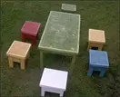
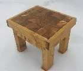
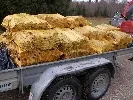
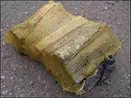

Eestis on ilus traditsioon paigutada oma talu või suvekodu väravasse kohanimele vastav talusilt või viit.
Valmistan erineva tehnoloogiaga puidust silte.
Siltide valmistamise stiilid
1. PÕDRAKÜNKA stiil - tähed freesitud u. 10 mm sügavuselt ja töödeldud musta emailvärviga.
2. UUEPERE TALU stiil - tähed paksusega 18mm eraldi välja freesitud, töödeldud musta emailvärviga ja kinnitatud tihvtnaeltega plangule.
3. PADUSSOO TALU stiil - tähed paksusega 18mm eraldi välja freesitud, töödeldud musta emailvärviga ja kinnitatud tihvtnaeltega 30mm paksusele tammeplangule.
4. LIIDUVERE stiil - tähed freesitud u. 10 mm sügavuselt ja töödeldud musta emailvärviga, plank põletatud gaasilambiga.
5. RÄTSEPA TALU stiil - tähed freesitud u. 10 mm sügavuselt ja töödeldud musta emailvärviga. Valmistatud 30 mm saareplangu peale.
Kõik sildid on töödeldud kahekordselt ilmastikukindla värvitu lakiga ("REMMERS LASUR"). Aastas korra soovitatav hooldada (müüakse ESPAKIS).
"REMMERS LASUR"-i asemel võimalik kasutada valmistamisel ka heledat tõrvaõli (tõmbub aja möödudes halliks).
Standardsed mõõdud: tähe kõrgus 140 mm, laua laius u. 200-250 mm.
Valikus erineva suurusega trüki- ja kirjatähed ning numbrid kas peitsitult või värvitult. Tähtede näidised. Tähtede suuruse muutmisest tulenevalt võimalik muuta kogu sildi mõõtu vastavalt kliendi soovile.
Üldjuhul kasutan servamata tamme- või kuuseplanku laiusega u. 200-300mm.
Võimalikud eritellimused, erinevad kirjastiilid (n. "Dannebrog", "NEPTUN") jne.Tootmine Läänemaal. Transport pakiautomaati, cargobussiga või cargokulleriga üle Eesti!
Hinnakiri
"PÕDRAKÜNKA" stiil - 90 €
"UUEPERE TALU" stiil - 100 €
"PADUSSOO TALU" stiil - 110 €
"LIIDUVERE" stiil - 95 €
"RÄTSEPA TALU" stiil - 110 €
Võimalik tellida kliendi enda väljavalitud kirjastiilis / fontiga silte.
Eritööde puhul hind kokkuleppel.


Lisaks valmistan ka söögi- ja diivanilaudu ning lastele aiamööblit.

Müügil kuivad küttepuud, sanglepp ja hall lepp, 40L võrgus (30cm), lahtiselt 40cm, 50cm.